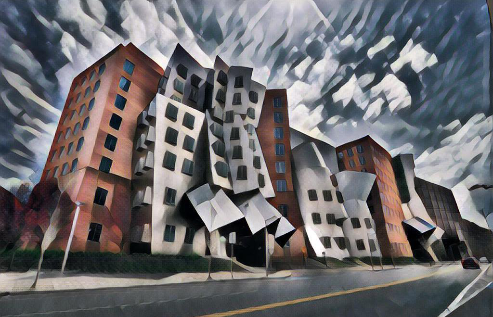
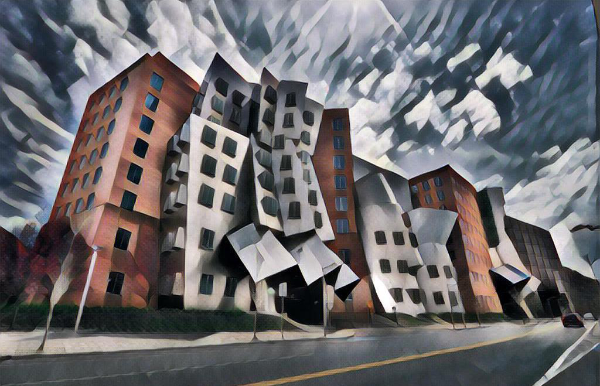

AI Art Algorithms & Generators
Introduction
The following is a list of the most powerful AI art generators, some paid and some free:
- DeepDream
- Stable Diffusion
- Dall-e 2
- Midjourney
- StyleGAN
- Jasper
The following are some of the powerful AI art algorithms available for machine learning:
- Generative Adverserial Networks (GANs)
- Neural Transfer Networks (aka Style Transfer)
- Vector Quantized Generative Adversarial Network and Contrastive Language–Image Pre-training
- Convolutional Neural Network
- Controller Area Networks (CANs)